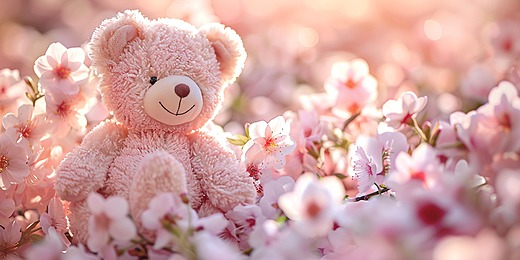

Hai, ...
Selamat ulang tahun. 🌷
Hari ini hari yang hanya milikmu.
Jadi aku membuat tempat kecil ini.
Tidak ada yang perlu kamu urus di sini.
Tidak ada yang perlu kamu kuatkan. Tidak ada yang perlu kamu jawab.
Kamu cukup membaca, pelan-pelan, sebagai orang yang sedang dirayakan.
satu
Untuk hari ini, kamu boleh berhenti sebentar
Tarik napas dulu, .
Kamu mungkin sudah terbiasa menjadi orang yang paling dulu bertanya "kamu baik-baik saja?" kepada orang lain.
Hari ini, biarkan pertanyaan itu berbalik arah sedikit saja.
Kamu tidak perlu menjawab apa-apa. Cukup tahu bahwa ada seseorang yang menanyakannya, dengan tulus, dari jauh.
dua
Main sebentar, ya
Ini hari ulang tahun. Kamu berhak tertawa dulu sebelum membaca bagian yang lebih dalam.

coba klik teddy ini beberapa kali
dan bunga ini, kesukaanmu
Tangkap 10 kelopak yang jatuh ini, ya.
Terakhir, cari pasangan kartunya.
tiga
Beberapa kalimat kecil yang kusembunyikan
Ada tiga titik di bawah ini. Sentuh satu per satu.
Bukan kebetulan kalau kamu memilih urutan yang kamu pilih. Semuanya tetap tentang kamu.
empat
Tentang orang yang selalu menyalakan lampu untuk orang lain
Aku ingin menebak sesuatu tentangmu. Boleh?
Hari ini, mungkin ada saat kamu tersenyum padahal hatimu sedang ingin duduk diam. Mungkin ada saat kamu bilang "aku nggak apa-apa", dan kata itu keluar lebih cepat dari yang kamu sadari.
Kalau tebakanku salah, anggap saja ini cerita tentang orang lain. Tapi kalau benar, kamu tidak sendirian membaca ini.
Kalau malam ini kamu boleh memilih satu bintang, bintang mana yang akan kamu pilih?
Menurutmu, siapa yang paling sering menjaga orang yang selalu menjaga semua orang?
Kamu itu tipe yang memahami kesulitan semua orang, bahkan yang tidak pernah mereka ucapkan. Kamu tahu kapan seseorang hanya butuh didengar. Kamu tahu kapan seseorang hanya butuh ditemani diam-diam.
Tapi kamu sendiri, saat berat, memilih menyimpannya rapat-rapat. Supaya tidak merepotkan. Supaya orang lain tidak khawatir.
lima
Ada yang ingin kukatakan untuk bagian dirimu yang diam-diam lelah
Aku tidak akan menanyakan apa yang sedang berat buatmu. Aku tahu kamu tidak suka meminta pertolongan.
Dan aku tidak akan memaksamu bercerita. Itu hakmu.
Tapi izinkan aku mengatakan ini sekali saja, dengan pelan:
meminta tolong bukan tanda kamu lemah.
Itu cuma tanda bahwa kamu manusia. Sama seperti semua orang yang kamu rawat dengan sabar selama ini.
Surat kecil untuk bagian dirimu yang kuat terus
Zeaboo, kamu sudah cukup kuat.
Kamu sudah cukup kuat untuk hari-hari yang tidak ada yang tahu bahwa itu berat.
Kamu sudah cukup kuat untuk menelan kata "tolong" di tenggorokan, lalu tetap datang dengan senyum untuk orang lain.
Hari ini, kamu tidak perlu membuktikan itu lagi kepada siapa pun.
Kalau nanti ada hari ketika dunia terasa terlalu bising, kamu boleh diam. Kamu boleh menangis tanpa alasan yang bisa dijelaskan. Kamu boleh tidak menjadi tempat bersandar untuk sementara waktu.
Orang-orang yang menyayangimu tidak akan pergi hanya karena kamu sedang tidak kuat.
Dan kalau kamu butuh satu tempat yang tidak menuntut penjelasan, aku ingin menjadi salah satunya. Tanpa syarat, tanpa harus menjadi apa-apa.
Kamu tidak perlu meminta. Cukup bilang, "aku capek". Itu sudah lebih dari cukup.
enam
Dan ada satu surat lagi
Zeaboo.
Ada banyak hal yang ingin kusampaikan, tapi hari ini aku memilih yang paling jujur saja.
Kamu adalah orang yang melihat orang lain sebagai manusia. Bukan sebagai peran, bukan sebagai kegunaan, bukan sebagai beban.
Kamu juga melihatku seperti itu. Sejak awal. Tanpa menilai, tanpa mengecilkan, tanpa membuatku merasa harus menjadi lebih dari diriku sendiri.
Kamu mungkin tidak sadar, tapi hal sekecil itu mengubah banyak hal untukku. Ada hari-hari ketika aku merasa biasa-biasa saja, dan kata-katamu membuatku merasa layak didengar.
Kamu tidak pernah menggurui. Kamu tidak pernah membuatku merasa kecil. Kamu mendengarkan sampai selesai, seolah aku memang pantas didengar.
Aku memperhatikan hal-hal kecil tentangmu. Cara kamu berbicara lebih lembut ketika orang lain sedang rapuh. Cara kamu diam sebentar sebelum memilih kata yang tidak akan melukai.
Dan aku juga memperhatikan saat kamu sendiri sedang lelah, tapi memilih untuk tidak mengatakannya.
Aku ingin kamu tahu, ada orang yang melihat itu. Bukan untuk mengasihanimu. Hanya karena kamu pantas diperhatikan, sama seperti kamu memperhatikan semua orang.
Aku tidak akan menyebut apa yang kurasakan dengan nama apa pun. Cukup tahu bahwa kamu berarti. Lebih dari yang pernah kuucapkan.
Terima kasih sudah menjadi dirimu. Terima kasih sudah ada.
Dari seseorang yang diam-diam selalu senang setiap kali kamu ada. —
...
Ini alasan tempat kecil ini dibuat.
Bukan untuk memberimu sesuatu yang besar, tapi supaya hari ini ada satu tempat yang isinya hanya tentang kamu.
SELAMAT ULANG TAHUN, ZEABOO.
Semoga tahun ini kamu lebih sering dipeluk oleh hal-hal baik daripada oleh keadaan yang melelahkan.
Semoga setiap kebaikan yang kamu bagikan diam-diam kembali padamu, berkali-kali lipat, dengan cara yang lembut.
Semoga kamu menemukan keberanian kecil untuk berkata "aku butuh bantuan", dan semoga orang yang mendengarnya adalah orang yang tepat.
Semoga kamu dikelilingi orang yang menjagamu sebaik kamu menjaga mereka.
Kamu tidak harus sempurna untuk disayangi. Kamu sudah layak, persis seperti sekarang.
Dan kalau suatu hari kamu ragu tentang nilaimu, kembalilah ke halaman ini. Baca pelan-pelan. Ingat bahwa ada yang melihatmu dengan sangat jelas.
Selamat ulang tahun, Zeaboo. 🌷
delapan
Beberapa janji kecil yang tidak perlu dijawab
Kalau nanti kamu bertanya, kenapa ada orang yang mau membuat semua ini untukmu...
mungkin jawabannya sederhana.
Karena orang yang selalu ada untuk semua orang juga berhak punya satu hari ketika dialah yang dijaga.
Karena kebaikanmu tidak pernah luput dari mata yang memperhatikan.
Karena kamu tidak pernah memperlakukanku sebagai orang asing, dan aku ingin membalasnya, walau hanya dengan sebuah halaman kecil.
Janji kecil dariku
Kalau kamu terlalu lelah untuk meminta, aku tidak akan menunggumu meminta.
Kalau kamu hanya ingin diam, aku akan ikut diam bersamamu.
Kalau kamu ingin bercerita, aku akan mendengarkan sampai selesai, sebagaimana kamu selalu mendengarkan orang lain.
Kamu tidak perlu menjadi kuat sendirian lagi. —
sembilan
Satu permohonan, sebelum kita berpisah
pejamkan mata, buat satu permohonan, lalu ketuk kue ini untuk meniup lilinnya
Apa pun yang kamu minta tadi, aku ikut mengaminkannya diam-diam.
Kalau suatu hari kamu lupa tentang halaman kecil ini, tidak apa-apa.
Aku hanya berharap, kapan pun kamu merasa sendirian, kamu ingat: pernah ada hari ketika seseorang menyiapkan tempat ini hanya supaya kamu merasa disayang.
Dunia ini sedikit lebih lembut karena kamu ada.
Terima kasih sudah lahir, Zeaboo.
Selamat ulang tahun. Aku bahagia kamu ada. 🌷
🌷
Dibuat dengan sedikit waktu.
Dan banyak ketulusan. —